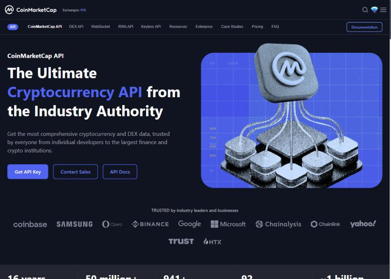
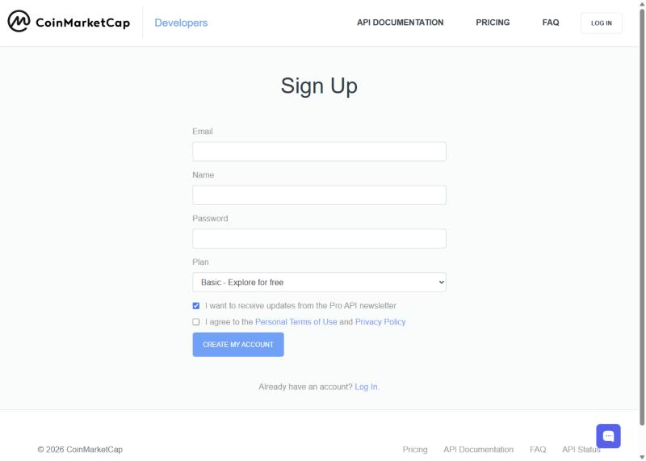
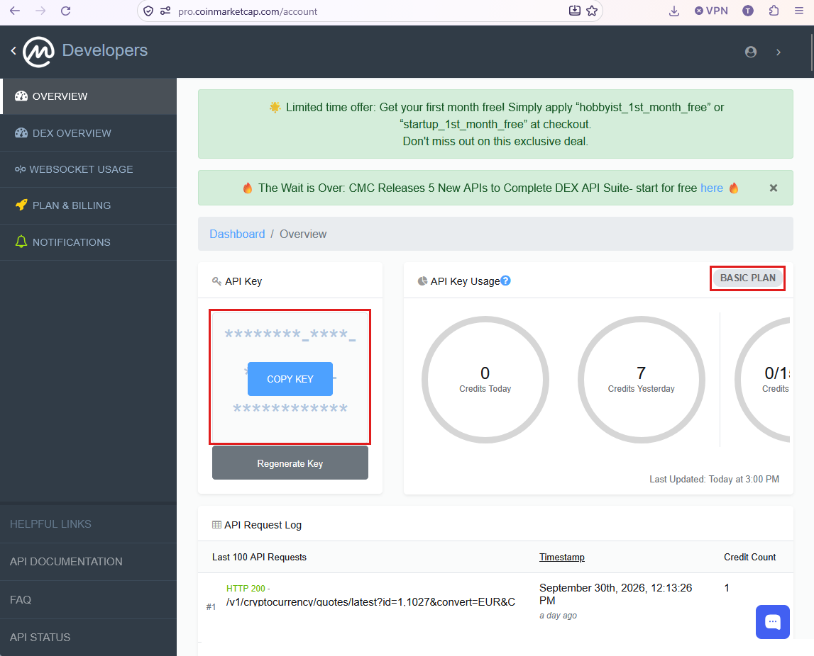
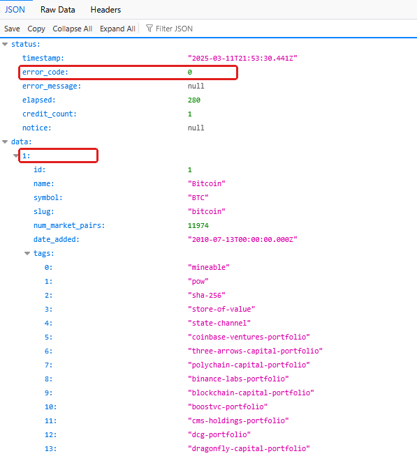

CoinMarketCap fiók létrehozása és az első API-kulcsod
Kipróbálsz egy nyílt API-hívást, regisztrálsz a fejlesztői portálra, kulcsot generálsz, és lekéred vele a Bitcoin árfolyamát.
- kipróbáltál egy valódi API-hívást;
- lesz CoinMarketCap fejlesztői fiókod és saját API-kulcsod;
- a kulcsot ki is próbáltad: a böngésződben lekérted a Bitcoin árfolyamát;
- tudod, mit szabad és mit nem szabad csinálni egy API-kulccsal.
Mire lesz ez jó?
A harmadik napon azt tanuljuk, hogyan "beszélnek" egymással a rendszerek ember nélkül: ehhez kell az API. Ebben az útmutatóban egy CoinMarketCap fiókot hozunk létre, egy saját kulcsot generálunk, és két gyors próbát is lefuttatunk. Az API-on keresztül lekért adatok komplexebb feldolgozása a harmadik napon következik.
A CoinMarketCap egyes végpontjai fiók és API-kulcs nélkül is kipróbálhatók. Másold ezt a címet a böngésző címsorába, majd nyomj Entert:
https://pro-api.coinmarketcap.com/public-api/v1/cryptocurrency/listings/latest?start=1&limit=10&convert=USDA válasz JSON-formátumú adat a piaci rangsor első tíz kriptovalutájáról. Az API (Application Programming Interface) olyan programozási felület, amelyen keresztül rendszerek adatot kérhetnek le vagy műveletet indíthatnak. A böngésző most HTTP-kérést küld egy konkrét címre, az API-végpontra, a szerver pedig strukturált adatot ad vissza. A következő gyakorlatokhoz saját kulcsra lesz szükségetek, ezért első lépésként saját API kulcsot kérünk.
- Nyisd meg ezt az oldalt: https://coinmarketcap.com/api/ és kattints a Get API Key gombra.

A fejlesztői portál nyitóoldala. A kék Get API Key gomb visz a regisztrációhoz. - A regisztrációs űrlapon add meg az e-mail-címedet, a nevedet és egy jelszót. A Plan mezőben válaszd a Basic (Explore for free) lehetőséget. Ha nem kérsz hírlevelet, vedd ki a hozzá tartozó pipát. Fogadd el a feltételeket, majd kattints a Create my account gombra.

A regisztrációs űrlap. A Plan maradjon Basic (ingyenes); a hírlevelet nem kérjük. - A megadott címre megerősítő e-mail érkezik a CoinMarketCaptől: nyisd meg, kattints a benne lévő megerősítő gombra, majd lépj be a fiókodba.
- Belépés után a fejlesztői irányítópult (Developers, Overview) fogad: https://pro.coinmarketcap.com/account. Bal oldalt az API Key kártyán a kulcsod csillagokkal takarva áll: vidd fölé az egeret, és a megjelenő COPY KEY gombbal másold vágólapra, majd mentsd el egy jegyzetfájlba a BPA_kurzus mappádba. Jobbra fent a BASIC PLAN jelvény igazolja, hogy az ingyenes csomagon vagy; mellette a kreditszámlálók mutatják a felhasználásodat.

Lent az API Request Log minden hívásodat listázza; a mini-feladat lekérése (id=1,1027) pontosan így jelenik majd meg benne. A képen a kulcs és az IP-cím ki van takarva: a saját kulcsodat te se mutasd meg senkinek.
- Ne oszd meg senkivel, és ne tedd közzé (fórum, GitHub, közös dokumentum).
- A kurzusfeladatokban a saját kulcsodat mindig te írod be; a beadandókba soha nem kerül bele.
- Ha véletlenül kiszivárgott, a portálon bármikor tudsz új kulcsot generálni.
Az első kulcsos lekérdezésed
Másold be az alábbi címet a böngésződbe, és az IDE_A_KULCSOD részt cseréld ki a saját kulcsodra:
https://pro-api.coinmarketcap.com/v1/cryptocurrency/quotes/latest?id=1&convert=EUR&CMC_PRO_API_KEY=IDE_A_KULCSODAz id=1 a Bitcoin azonosítója a rendszerükben, a convert=EUR pedig azt kéri, hogy euróban kapd az árat.
Sikeres kérésnél a status.error_code értéke 0. Az error_message mező ilyenkor üres vagy null; a mező puszta jelenléte nem jelent hibát.
A Bitcoin euróban kifejezett ára ebben a példában ezen az útvonalon található: data → 1 → quote → EUR → price. A 1 a Bitcoin azonosítója; a price értéke egy szám.
{
"status": {"error_code": 0, "error_message": null},
"data": {
"1": {
"symbol": "BTC",
"quote": {"EUR": {"price": 50000.12}}
}
}
}Rövidített, szemléltető példa. A fenti ár kitalált; a saját lekérdezésed aktuális adatot ad.

error_code: 0 és a data alatti 1 kulcs, vagyis a Bitcoin. Az ár ennél lejjebb, a quote blokkban található.Ha a kérés nem sikerül
- 401 vagy érvénytelen kulcs: ellenőrizd, hogy a teljes saját kulcsot másoltad be, szóköz nélkül, az IDE_A_KULCSOD helyére.
- 429 vagy kerettúllépés: várj a következő próbával; a fejlesztői portálon ellenőrizd a felhasználást.
- 400 vagy hibás paraméter: ellenőrizd az id és convert értékét, valamint a kérdőjelet és az & elválasztókat.
- Hálózati hiba: ellenőrizd az internetkapcsolatot. Ha a választ csak egyetlen hosszú sorban látod, használd a böngésző keresését a price mezőhöz.
A kulcsos hívást azért próbáljuk ki a böngészőben, mert így a leggyorsabb megérteni a működését. Valós alkalmazásban az API-kulcsot nem helyezzük az URL-be és nem építjük kliensoldali kódba: ott a kulcs konfigurációban vagy biztonságos tárolóban marad, és a kérést a szerver vagy a robot küldi; a harmadik és a nyolcadik napon mi is így dolgozunk majd. Az ilyen URL ráadásul a böngésző előzményeibe is bekerül, ezért a próbák után érdemes onnan törölni.
Kérd le egyszerre a Bitcoin és az Ethereum árfolyamát: az id=1 helyére írj id=1,1027-et. Keresd meg a válaszban mindkét árat. Melyik mennyit ér most euróban?
Az ingyenes (Basic) csomag keretei
| Keret | Ingyenes (Basic) csomag |
|---|---|
| Havi keret | 15 000 kredit (egy egyszerű lekérés jellemzően 1 kredit) |
| Sebesség | legfeljebb 50 lekérés percenként |
| Felhasználás | A kurzusban oktatási célra használjuk. Egy későbbi üzleti alkalmazásnál az aktuális licenc- és felhasználási feltételeket külön ellenőrizni kell. |
A kurzus összes feladata bőven belefér ebbe a keretbe; napi pár tucat lekérésnél többre nem lesz szükség. A keretek időnként változnak: az aktuális állapotot a portál Plan and Billing oldalán látod.
- Ugyanígy működik szinte minden üzleti adatszolgáltatás: tőzsdei árak, devizaárfolyamok, időjárás, szállítási díjak.
- A nyolcadik napon ugyanezt a lekérést a robotod végzi majd el.
- A CoinMarketCap API hivatalos dokumentációja: coinmarketcap.com/api/documentation: a végpontok és a kreditszámítás referenciája.
- A fejlesztői portál súgója (kulcs, csomagok, számlálók): coinmarketcap.com/api/faq.